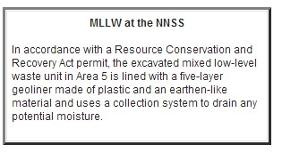

The Area 5 Radioactive Waste Management Site

Like most LLW, RTGs disposed of at the NNSS were handled without any special equipment or clothing because of the relatively low dose rate levels.

An irradiator from Sandia National Laboratory was disposed of at the RWMS in September 2012.


The following article was reproduced with permission from the January-April 2013 issue of RADWASTE SOLUTIONS magazine, copyright 2013 by the American Nuclear Society.
The NNSS is home to a state-of-the-art waste management facility, providing a permanent disposal option for a select group of LLW/ MLLW generators whose programs have passed a rigorous approval process.
By Angela Ramsey
Throughout its rich 62-year history, the Nevada National Security Site (NNSS) has been a leader in U.S. Department of Energy research and development, national security initiatives, and environmental management activities.
In the past few decades, the NNSS has served as a critically needed low-level waste and mixed low-level radioactive waste disposal resource for DOE and U.S. Department of Defense (DoD) sites across the nation. The NNSS is home to a state-of-the-art waste management facility, providing a permanent disposal option for a select group of LLW/ MLLW generators whose programs have passed a rigorous approval process. Much of the LLW/MLLW, consisting of packaged debris, trash, soil, equipment, tools, and discarded personal protective clothing, comes from the cleanup and deactivation of facilities associated with past nuclear research, development, and testing conducted under the Manhattan Project.
Although missions have evolved across the DOE Complex and waste disposal needs have changed, the NNSS has maintained a steady commitment to safety, responsible service, and the protection of workers and the environment.
HISTORY OF THE NNSS WASTE DISPOSAL PROGRAM
In the early 1960s, under the authority of the Atomic Energy Act, the NNSS—then known as the Nevada Test Site—began disposing of LLW in the southeastern portion of the site known as Area 5. Following Area 5’s early success, the NNSS constructed an additional disposal location approximately 15 miles to the north in Area 3. Initially, the Area 5 and Area 3 disposal sites were used for waste generated through onsite nuclear weapons testing and research, but operations later evolved to include the acceptance of cleanup-related waste.
In 1978, the NNSS waste disposal program was formalized, establishing criteria for the acceptance of LLW generated at the NNSS and other DOE- and DoD-approved facilities throughout the United States. The expanded NNSS waste management practices were solidified when the LLW Policy Act Amendments of 1985 clarified the DOE’s responsibility for the disposal of DOE-generated LLW and classified DOD-generated LLW. It is important to note that the NNSS does not accept commercially generated LLW.
WHY DISPOSE OF LLW AT THE NNSS?
The NNSS location proved suitable for LLW/ MLLW disposal for a combination of reasons. Two major considerations were the site’s remoteness and security. Covering 1360 square miles, the NNSS represents one of the largest secured, restricted-access areas in the United States. The site is surrounded by thousands of additional acres of withdrawn land for use as a protected wildlife refuge and a secure military range, which totals some 5470 square miles of unpopulated land. The nearest population center to the Area 5 is a rural community 24 miles to the southeast.
The site’s arid desert environment was also considered ideal for waste disposal operations. Both the Area 5 and Area 3 Radioactive Waste Management Sites (RWMSs) are located in closed basins that are well above the water table at approximately 770 feet and 1600 ft below ground, respectively. Recharge of the groundwater is not possible under current climate conditions, because the average annual rainfall is four to six inches, and evaporation exceeds rainfall by 12 times. This combination of extremely dry climate, deep groundwater, and thick alluvial soil with a high storage capacity for water limits the likelihood of water migrating into the waste zone or groundwater.

Area 5
The Area 5 RWMS is the only currently active disposal site at the NNSS. The Area 5 RWMS covers 740 acres, of which approximately 200 acres have been developed for radioactive waste storage and disposal. The Area % RWMS is made up of 38 excavated disposal cells; 31 of these cells are filled and closed. Construction is under way for an additional cell with plans to build two more to meet the needs of the complex.
In general, waste containers are stacked in Area 5 disposal cells, one upon the other in a stair-step configuration, until the stack reaches 4 ft below the top of the cell walls. The waste is placed in a 20 x 20 ft grid system inside each cell so that waste can be tracked once containers are covered soil. A specially engineered MLLW disposal cell was also constructed in Area 5 with a state-of-the-art liner and leachate collection system designed in accordance with a Resource Conservation and Recovery Act (RCRA) permit issued by the state of Nevada.

Aerial views of Area 3 and Area 5
Area 3
The Area 3 RWMS is a 128-acre disposal area formerly used for the disposal of larger or bulk-type packages. Subsidence craters formed in Area 3 during historic underground nuclear tests were converted into disposal units. Rather than stacking the waste in columns, waste is disposed of in a layer-cake configuration, with each layer of waste covered by a layer of compacted soil ranging from 1 to 3 ft in depth.
Although Area 3 waste disposal operations officially began in 1968, the site received relatively little waste until 1976, when a large volume of bulk waste came in from the cleanup of tunnels in NNSS Area 12. Area 3 continued to operate until 2006, when the site went into inactive status.
IT’S SAFETY FIRST AT THE NNSS
Over the years, NNSS waste disposal operations have demonstrated consistent high standards when it comes to safety and performance, according to Jhon Carilli, waste expert at the DOE’s National Nuclear Security Administration Nevada Site Office.
“Our exceptional safety record is a direct result of a highly trained workforce and well-crafted procedures,” said Carilli. “These procedures take into account not only environmental regulations, but also strict federal and state safety standards. Our philosophy,” he continued, “is rooted in the idea of safety at every stage of the disposal process.”
STAGES TO DISPOSAL
How Does a Generator Qualify to Ship Waste to the NNSS?
Long before waste can be shipped to the NNSS, waste generators must undergo a process of intense reviews, inspections, and certification processes to ensure that everything—from characterization, packaging, and transportation to disposal and monitoring—is in accordance with the NNSS Waste Acceptance Criteria (WAC). The NNSS WAC is the formal document that outlines the specific requirements for NNSS waste disposal, taking into account additional requirements set forth by the U.S. Department of Transportation (DOT), RCRA, and other applicable federal, state, and local laws and regulations.
First, Nevada Site Office waste acceptance personnel visit generator sites to make sure all generator policies and procedures meet or exceed the NNSS WAC. Part of the evaluation includes verifying that worker qualifications and processes are accurately reflected in the documentation submitted. NNSS waste auditors then conduct visual inspections of proposed waste streams and the methods used to characterize the waste to determine disposal eligibility.
Once a generator’s program is approved, the proposed waste stream must be evaluated. Detailed descriptions or “profiles” of each proposed waste stream must be submitted to the Nevada Site Office for approval. Profiles include specific information on the waste origin, quantity, composition, packaging, and the analytical and preparatory methods used to characterize the waste.
The profiles then undergo extensive review by the NNSS Waste Acceptance Review Panel, a group consisting of waste acceptance personnel, Area 5 disposal operations supervisors, and key State of Nevada Division of Environmental Protection (NDEP) representatives. “Our top priorities are the health and safety of Nevadans and the protection of the environment,” commented Tim Murphy, chief at NDEP’s Bureau of Federal Facilities. “NDEP’s participation in the Waste Acceptance Review Panel allows us to review the waste coming into Nevada and better protect the interests of our stakeholders.” The panel deliberates, makes recommendations for waste approval/disapproval, and forwards recommendations to the head of Nevada Site Office federal disposal operations for the final determination.
WASTE TRANSPORTATION
The NNSS works with approved generators to ensure waste is packaged and transported in accordance with the NNSS WAC and DOT regulations. Prior to waste acceptance at the NNSS, generators and their contracted shipping carriers must exhibit full compliance in terms of packaging, routing, shipping documentation, permits, etc.
When a waste shipment arrives at the NNSS Area 5 RWMS, disposal operations personnel verify that shipping documentation matches previously approved paperwork. Each truck, trailer, and container is then surveyed to ensure security seals are in place and the package is intact and appropriately labeled. Waste packages may be subject to inspection with onsite X-ray technology if further verification is needed. If during inspection waste is found to be out of compliance with the NNSS WAC, the waste may be rejected and returned to the generator site.
DISPOSAL
Once the waste has successfully passed final inspection, waste trucks are allowed to access one of the several excavated
disposal cells within the Area 5 disposal area. As mentioned, waste is scanned and positioned within a grid system in the appropriate cell. The 20 x 20 ft grid system uses letters and numbers to locate waste packages once covered with soil. This tracking system helps waste personnel monitor the accumulation of radionuclide quantities and, if need be, retrieve waste packages.
MONITORING
Following waste disposal, Area 5 personnel use special equipment to perform ongoing air, groundwater, and soil monitoring. These monitoring methods work to ensure radioactivity is below allowable regulatory levels and provides early detection in the
unlikely event that radionuclides migrate from the immediate disposal area. In addition, experts use computer modeling software to conduct periodic performance assessments on the waste cells. These three-dimensional mathematical models help scientists make forecasts about the potential short- and longterm risks associated with waste disposal.
THINKING OUTSIDE THE BOX FOR SPECIALIZED WASTE
Historically, the Area 5 disposal facility has been reserved for conventionally packaged waste in containers such as steel drums or wooden and steel boxes, but over the years the NNSS waste program has demonstrated the capability to accommodate specialized waste as well. These wastes are accepted on a strict case-by-case basis and must comply with all federal and state regulations and requirements.
Take, for instance, a recent campaign to dispose of large, high-powered batteries called radioisotope thermoelectric generators (RTGs), also known as space batteries. From September to October 2012, five separate shipments of the cylinder-shaped RTGs were trucked in from Oak Ridge National Laboratory in Tennessee to the RWMS. Components of the RTGs, which are designed to provide heat and electricity in remote environments, are made by scientists and engineers at the DOE’s Idaho, Oak Ridge, and Los Alamos National Laboratories.
As is the case with all specialized waste, the NNSS waste management program put special procedures in place to handle the RTG disposal. “We tailor disposal procedures and update site performance according to the special requirements of a particular waste item,” explained Carilli. “This is to ensure worker safety at the time of disposal and also the safety and performance of our disposal units over the long term.”
Following a careful offloading process, several of the RTGs were placed in excavated holes at the bottom of a waste cell. Some RTGs with lower radiation dose rate levels did not require deeper burial in the bottom of the waste cell and were positioned alongside standard LLW containers. The RWMS has accommodated other LLW items of unusual size and shape, such as tanks, gloveboxes, and generator parts.
In September 2012, waste crews at the Area 5 RWMS disposed of a tubed-shaped irradiator unit from Sandia National Laboratories.
As with all waste disposed of at the NNSS, specialized waste must comply with the rigorous certification and approval process established in the NNSS WAC.
STRIVING FOR EXCELLENCE
The NNSS has demonstrated a long-standing commitment to working openly with generators, stakeholders, and state regulators, said Rob Boehlecke, Nevada Site Office Environmental Management Operations manager. “Whether NDEP is joining us on a generator audit or the Nevada Site-Specific Advisory Board is providing recommendations on waste disposal activities, we strive to maintain an open dialogue about our disposal practices, safety standards, and expectations,” he explained. [Note: The Nevada Site-Specific Advisory Board (NSSAB) is a volunteer citizen’s group that provides regular recommendations on Nevada Site Office environmental cleanup and waste management activities.] The NSSAB’s 2013 Work Plan includes an initiative relating to the Waste Acceptance Review Panel.
Over the years, expectations at the NNSS have been clear. From the point of generation to final disposal, NNSS waste disposal specialists are committed to the safe, responsible handling of LLW and MLLW. This commitment contributes to the safety of workers, the public, and the environment and is the key to the Nevada Site Office’s mission of serving cleanup efforts across the nuclear waste complex.
Angela Ramsey is a public involvement specialist with Navarro-Intera, contracted to the DOE, National Nuclear Security Administration Nevada Site Office. For more information on the Nevada Site Office waste disposal program, please visit http://nv.energy.gov/emprograms/radwastedisposal.aspx.
, which are discussed in the recent article on the NNSS in RadWaste Solutions magazine. Like most low-level waste, RTGs disposed of at the NNSS were handled without any special equipment or clothing because of the relatively low dose rate levels.")